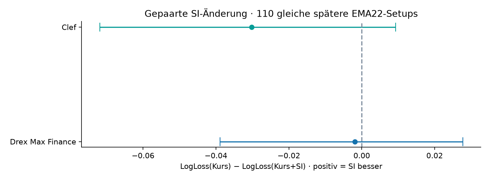

HY104-EMA22 · tatsächliche Strategie-Setups · SI-Zusatzinformation ·21.November2026
Verbessert vorhandener SI-Kontext unsere Setup-Vorhersage?
Abgeschlossen und unabhängig nachgerechnet
159echte native EMA22-Setups
110gleiche spätere Prüffälle
70abgeschlossene lokale Fits
484/484echte API-Antworten
Alle18 korrekten Modellarme direkt in MLflow
Wenig SI-Überlappung: Nur8 Prüffälle haben einen archivierten ES-Treffer in den vorherigen15Minuten,26 innerhalb60Minuten. Fehlende Meldungen bleiben unbekannte Archivabdeckung;das ist keine bewiesene SI-Abwesenheit. Entsprechend begrenzt ist jede Schlussfolgerung.
Alle14 lokalen +4 Cloud-Arme · immer dieselben110 Prüffälle
Jede Zeile vergleicht zwei Arme. Trefferquote höher ist besser;LogLoss kleiner ist besser. Eine AUC von0,5 entspricht fehlender Trennleistung. Innerhalb der Blöcke berechnet,um unterschiedliche Score-Skalen zwischen Fits nicht als Marktprognose zu verkaufen.
| Modell | Treffer Kurs | Treffer +SI | AUC Kurs | AUC +SI | LogLoss Kurs | LogLoss +SI | Status |
|---|
| Nur TrainingshäufigkeitOhne zusätzliche Kurs-/SI-Merkmale;reine Referenz | 60,0% | — | 0,5000 | — | 0,677535 | — | Referenz |
L1-LogistikNative Modellwahrscheinlichkeiten, Kalibrierung ungeprüft
MLflow: Kurs | 60,0% | 60,0% | 0,5000 | 0,5000 | 0,682294 | 0,682225 | Fertig · 10 Fits |
Elastic-Net-LogistikNative Modellwahrscheinlichkeiten, Kalibrierung ungeprüft
MLflow: Kurs | 60,0% | 60,0% | 0,4675 | 0,4675 | 0,678295 | 0,678586 | Fertig · 10 Fits |
RidgeClassifierEntscheidungswerte, keine Wahrscheinlichkeiten
MLflow: Kurs | 54,5% | 52,7% | 0,4869 | 0,4979 | — | — | Fertig · 10 Fits |
LinearSVCEntscheidungswerte, keine Wahrscheinlichkeiten
MLflow: Kurs | 54,5% | 53,6% | 0,4855 | 0,5007 | — | — | Fertig · 10 Fits |
SGD · log_lossNative Modellwahrscheinlichkeiten, Kalibrierung ungeprüft
MLflow: Kurs | 50,9% | 46,4% | 0,5152 | 0,5270 | 5,698640 | 5,422460 | Fertig · 10 Fits |
PerceptronEntscheidungswerte, keine Wahrscheinlichkeiten
MLflow: Kurs | 43,6% | 47,3% | 0,4813 | 0,4952 | — | — | Fertig · 10 Fits |
TabPFN v2Native Modellwahrscheinlichkeiten, Kalibrierung ungeprüft
MLflow: Kurs | 60,0% | 59,1% | 0,4993 | 0,5021 | 0,678102 | 0,681509 | Fertig · 10 Fits |
Drex Max FinanceDecision-API ·32 frühere Beispiele · kein Gewichts-Fine-Tuning
MLflow: Kurs · +SI | 51,8% | 57,3% | 0,5491 | 0,5539 | 0,745997 | 0,747851 | Fertig · 220 Hauptaufrufe |
ClefDecision-API ·32 frühere Beispiele · kein Gewichts-Fine-Tuning
MLflow: Kurs · +SI | 40,0% | 40,0% | 0,4461 | 0,4481 | 0,800820 | 0,831057 | Fertig · 220 Hauptaufrufe |
RidgeClassifier,LinearSVC und Perceptron liefern Entscheidungswerte;dafür wurden keine Wahrscheinlichkeiten und keine LogLoss-/Brier-Werte erfunden. Selbst native Modellwahrscheinlichkeiten sind hier nicht unabhängig kalibriert. Die reine Trainingshäufigkeit trifft60%;Trefferquote allein belegt daher keine brauchbare Vorhersage.
Was änderte SI bei den beiden API-Modellen?

Drex Max Finance: LogLoss-Verbesserung durch SI -0,001854;97,5%-Intervall [-0,038894;0,027699]. Brier-Verbesserung 0,002320.
Clef: LogLoss-Verbesserung durch SI -0,030237;97,5%-Intervall [-0,071891;0,009323]. Brier-Verbesserung -0,013293.
1’999 bewegliche Fünftages-Blöcke;bedingte Entwicklungsdiagnose,zwei primäre Modellvergleiche. Kein frischer OOS- oder Kausalitätsnachweis. Besserer Verlustwert allein ist keine höhere Auszahlung.
Wiederholbarkeit und Kosten
440 echte Hauptprognosen +44 vorher anhand der Metadaten gewählte Wiederholungen;alle484 Antworten gültig. Keine Hauptprognose durch Wiederholungen ersetzt oder gemittelt.
| Arm | Identische Wiederholungen | Größte Score-Abweichung | Klassenwechsel bei0,5 |
|---|
| Drex Max Finance · Kurs | 11 | 0,000000 | 0 |
| Drex Max Finance · +SI | 11 | 0,000000 | 0 |
| Clef · Kurs | 11 | 0,000000 | 0 |
| Clef · +SI | 11 | 0,000000 | 0 |
Konservative Reservierung 0,950770USD. Schätzung anhand gemeldeter Tokens und zitierter Preise 0,215459USD;ohne Promotionsrabatt obere Schätzung 0,293740USD. Die tatsächliche Providerrechnung wurde nicht ausgelesen.
Die richtige Strategie und die richtigen Ausgänge
HY104 mit EMA22-Einstieg,kein C28.03-Funded-Ersatz und kein isolierter Kursverlauf nach einer SI-Meldung. Quelle sind verifizierte native SQX-Trades. Das Label verwendet den tatsächlichen Strategieausstieg,native Gebühren auf5,74USD vereinheitlicht plus25USD zusätzlichen Tickstress.
159 Fälle vom28.Mai bis30.Oktober2026. Zunächst mindestens48 Trainingsfälle,eine ganze Chicago-Tageslücke,danach fünf spätere20-Geschäftsdatumsblöcke. Die110 Prüffälle liegen vom10.Juli bis30.Oktober auf67 Tagen. Es wurde nicht auf Tage mit später archivierten Meldungen eingeschränkt.
Acht strikt vergangene Preis-/Seitenmerkmale;SI ergänzt nur die zuvor bekannten STOP-/ICEBERG-Pfeile relativ zur Trade-Seite,den archivierten60-Minuten-Zähler und einen ausdrücklichen Unbekannt-Status. Gleicher Einzelkontrakt,mindestens30Sekunden Verzögerung. 32 abgeschlossene frühere Beispiele pro API-Aufruf;keine aktuellen oder zukünftigen Ausgänge und keine Roh-Ticks wurden mitgesendet.
Bereits mehrfach untersuchte Entwicklungsdaten,kein frischer OOS-Nachweis. Modell-Fit/Prognose und Konto-/Auszahlungsreplay sind unterschiedliche Prüfungen. Es gibt kein neues Handelsgate,keine neu berechneten Auszahlungen und keine Änderung laufender Sims.